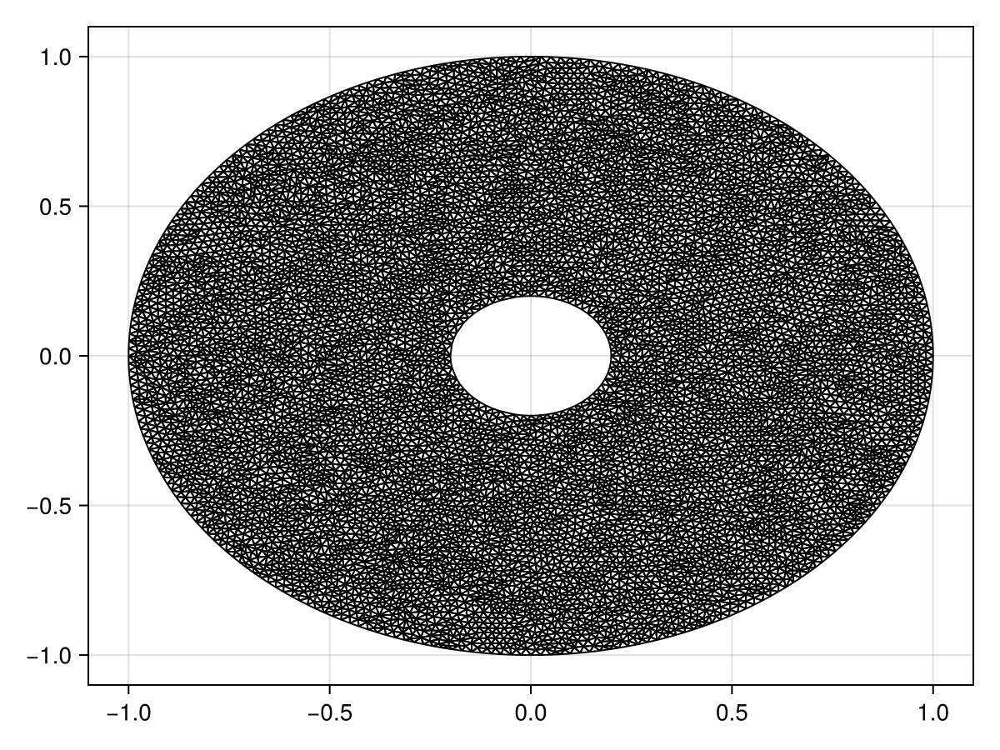
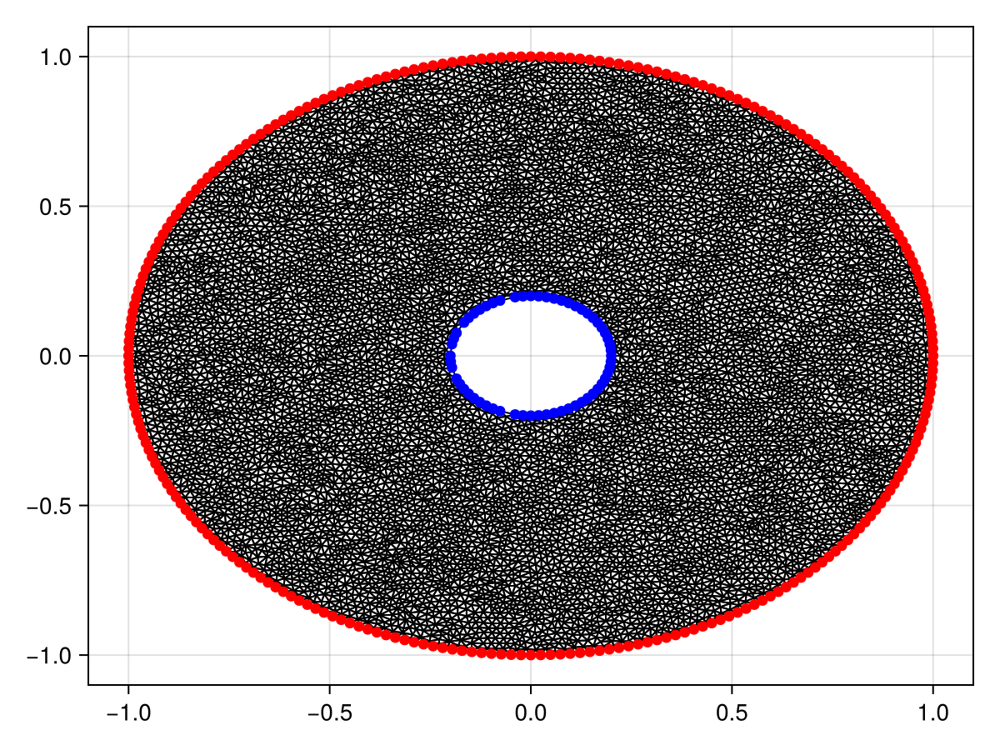
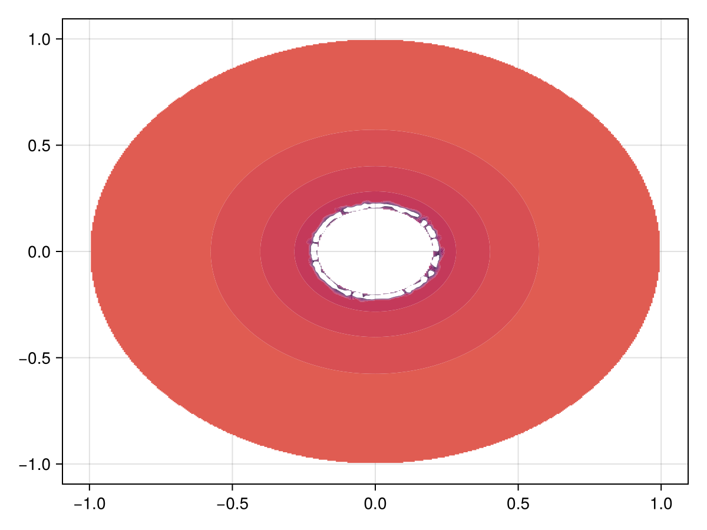
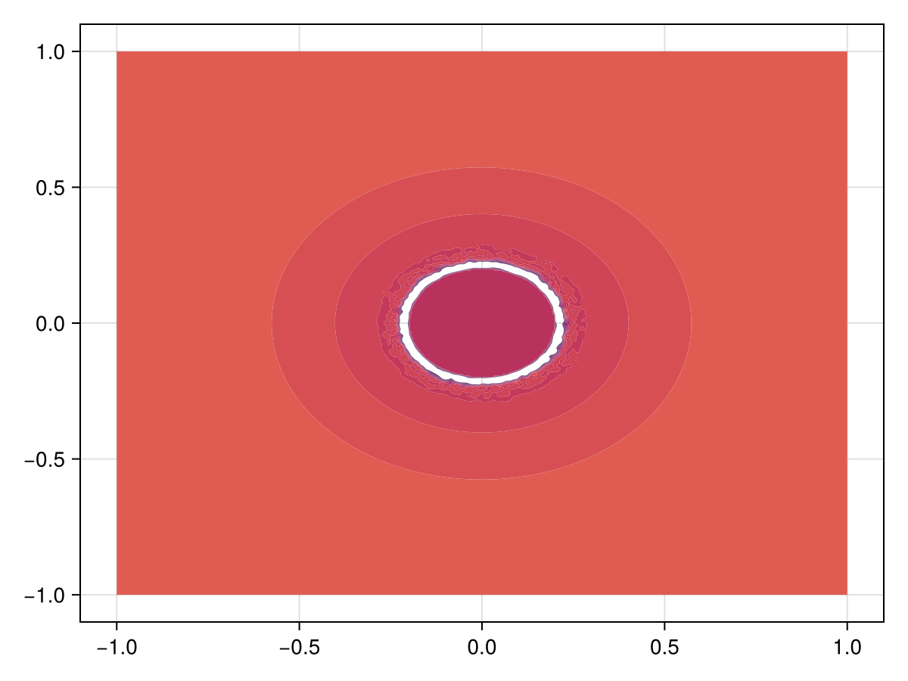

Diffusion Equation on an Annulus
In this tutorial, we consider a diffusion equation on an annulus:
\[\begin{equation} \begin{aligned} \pdv{u(\vb x, t)}{t} &= \grad^2 u(\vb x, t) & \vb x \in \Omega, \\ \grad u(\vb x, t) \vdot \vu n(\vb x) &= 0 & \vb x \in \mathcal D(0, 1), \\ u(\vb x, t) &= c(t) & \vb x \in \mathcal D(0,0.2), \\ u(\vb x, t) &= u_0(\vb x), \end{aligned} \end{equation}\]
demonstrating how we can solve PDEs over multiply-connected domains. Here, $\mathcal D(0, r)$ is a circle of radius $r$ centred at the origin, $\Omega$ is the annulus between $\mathcal D(0,0.2)$ and $\mathcal D(0, 1)$, $c(t) = 50[1-\mathrm{e}^{-t/2}]$, and
\[u_0(x) = 10\mathrm{e}^{-25\left[\left(x+\frac12\right)^2+\left(y+\frac12\right)^2\right]} - 10\mathrm{e}^{-45\left[\left(x-\frac12\right)^2+\left(y-\frac12\right)^2\right]} - 5\mathrm{e}^{-50\left[\left(x+\frac{3}{10}\right)^2+\left(y+\frac12\right)^2\right]}.\]
For the mesh, we use two CircularArcs to define the annulus.
using DelaunayTriangulation, FiniteVolumeMethod, CairoMakie
R₁, R₂ = 0.2, 1.0
inner = CircularArc((R₁, 0.0), (R₁, 0.0), (0.0, 0.0), positive=false)
outer = CircularArc((R₂, 0.0), (R₂, 0.0), (0.0, 0.0))
boundary_nodes = [[[outer]], [[inner]]]
points = NTuple{2,Float64}[]
tri = triangulate(points; boundary_nodes)
A = get_area(tri)
refine!(tri; max_area=1e-4A)
triplot(tri)
mesh = FVMGeometry(tri)FVMGeometry with 8986 control volumes, 17657 triangles, and 26643 edgesNow let us define the boundary conditions. Remember, the order of the boundary conditions follows the order of the boundaries in the mesh. The outer boundary came first, and then came the inner boundary. We can verify that this is the order of the boundary indices as follows:
fig = Figure()
ax = Axis(fig[1, 1])
outer = [get_point(tri, i) for i in get_neighbours(tri, -1)]
inner = [get_point(tri, i) for i in get_neighbours(tri, -2)]
triplot!(ax, tri)
scatter!(ax, outer, color=:red)
scatter!(ax, inner, color=:blue)
fig
So, the boundary conditions are:
outer_bc = (x, y, t, u, p) -> zero(u)
inner_bc = (x, y, t, u, p) -> oftype(u, 50(1 - exp(-t / 2)))
types = (Neumann, Dirichlet)
BCs = BoundaryConditions(mesh, (outer_bc, inner_bc), types)BoundaryConditions with 2 boundary conditions with types (Neumann, Dirichlet)Finally, let's define the problem and solve it.
initial_condition_f = (x, y) -> begin
10 * exp(-25 * ((x + 0.5) * (x + 0.5) + (y + 0.5) * (y + 0.5))) - 5 * exp(-50 * ((x + 0.3) * (x + 0.3) + (y + 0.5) * (y + 0.5))) - 10 * exp(-45 * ((x - 0.5) * (x - 0.5) + (y - 0.5) * (y - 0.5)))
end
diffusion_function = (x, y, t, u, p) -> one(u)
initial_condition = [initial_condition_f(x, y) for (x, y) in DelaunayTriangulation.each_point(tri)]
final_time = 2.0
prob = FVMProblem(mesh, BCs;
diffusion_function,
final_time,
initial_condition)FVMProblem with 8986 nodes and time span (0.0, 2.0)using OrdinaryDiffEq, LinearSolve
sol = solve(prob, TRBDF2(linsolve=KLUFactorization()), saveat=0.2)retcode: Success
Interpolation: 1st order linear
t: 11-element Vector{Float64}:
0.0
0.2
0.4
0.6
0.8
1.0
1.2
1.4
1.6
1.8
2.0
u: 11-element Vector{Vector{Float64}}:
[-1.6918979226151304e-9, -2.1738750708653327e-6, 3.726653172035993e-5, -1.6918979226151364e-9, 3.705953483484758e-5, -0.2105979106615764, 5.175555005801385e-16, 1.1709299175694265, 5.1755544523350865e-16, 0.0020233820430370225 … 1.017027715370349e-12, -4.2235113212980827e-7, -3.304946603943528e-13, -0.004551592181902057, -0.0064304765914936154, 8.721736999482021e-13, -1.1528805500311166, 8.447171031958781, 2.978359285676185e-11, 1.0817587716627684e-11]
[0.04117910195045892, 4.673029309079141, 0.8990653696612744, 0.05110297689026207, 0.8306226003678054, -0.16747201171959292, 0.4445510417191181, 1.147051624751615, 0.4029356709116486, 4.673029309079141 … 0.4909240565115158, 12.90636806408303, 0.5584901470451944, 0.22509408820619672, 0.20290115293711325, 0.4772265653493249, 0.023392929726039565, 1.2302871430206754, 0.5764339052043608, 0.5583052682723283]
[1.84290422245115, 8.312130701094134, 2.2505959472306527, 1.8537690436184904, 2.2311692298644266, 1.7700052057623754, 2.049893555918292, 2.329223609084653, 2.0292946146849378, 8.312130701094134 … 2.224918563863111, 21.720032765875807, 2.484595384773257, 2.2625806765973833, 2.2331352755669496, 2.176304728887901, 2.0411303593179744, 2.5875702814010078, 2.1980307171508815, 2.1592307263759087]
[4.361848033234305, 12.865947654000854, 4.544890624171355, 4.367406857228138, 4.538309775710649, 4.32878170847978, 4.456257442160016, 4.579114439145473, 4.448267353197731, 12.865947654000854 … 4.706394293876565, 32.95941957200919, 5.0749273820291885, 4.899953039009057, 4.865599513119467, 4.637015007438031, 4.653592067030615, 4.9285106440055655, 4.613630957703188, 4.562784833967426]
[7.258725147070201, 15.398463716249378, 7.339648317111258, 7.2607239416463365, 7.337779371562839, 7.243612699799387, 7.300019516333157, 7.355276325643119, 7.297932349327238, 15.398463716249378 … 7.586814389715068, 25.811670003251844, 8.008180432989844, 7.854303811150692, 7.817457983898861, 7.507298711420576, 7.595075248343087, 7.748793393066147, 7.462923869118641, 7.406155405195243]
[10.313140415756969, 19.416305213947815, 10.347976026660668, 10.313334376655472, 10.348091749481613, 10.306192306162178, 10.330174089767418, 10.35535544659824, 10.3307842866666, 19.416305213947815 … 10.628540943520438, 81.32412451673143, 11.064939996087158, 10.923505102147004, 10.88629445077354, 10.545907517731804, 10.663552864436992, 10.761725096362726, 10.493010252955, 10.434543331513408]
[13.378623116782679, 22.165008972225763, 13.392700164361301, 13.377979903803045, 13.39367773063749, 13.37536468044711, 13.384701877479607, 13.396372999879716, 13.38650542722287, 22.165008972225763 … 13.680967973882263, 106.05436784800668, 14.113379574857118, 13.980717434727321, 13.94423988827793, 13.598968626878497, 13.72669846348104, 13.798556017728929, 13.543621910392536, 13.485820608738658]
[16.359835773706397, 24.945358456714583, 16.364626141117117, 16.358835348794376, 16.365954346276794, 16.35824125404706, 16.361039215393202, 16.366618580449483, 16.363317937957028, 24.945358456714583 … 16.646446897211113, 97.26615003032128, 17.06227195248694, 16.937929082847877, 16.903021043965534, 16.567497655598114, 16.695143650049967, 16.75341798091734, 16.51295639161479, 16.457385575192212]
[19.201516466400637, 26.33191680589102, 19.202207120685433, 19.200389551053416, 19.203646718059034, 19.20067584673791, 19.200605480976584, 19.203425847607644, 19.203019982842186, 26.33191680589102 … 19.471984141214033, 35.560360227350515, 19.868339201997376, 19.751053595286187, 19.71783256419596, 19.396877277239124, 19.520394119253684, 19.57107760812444, 19.344456900610172, 19.291677879145038]
[21.872821495511094, 29.051659422966658, 21.871769157259443, 21.871680478949735, 21.87320331725962, 21.872324916032696, 21.871059944064864, 21.87261878537958, 21.87344006066417, 29.051659422966658 … 22.123918347248267, 128.98319315418533, 22.491997405333343, 22.383838918090568, 22.35303544308569, 22.054002610490546, 22.169834120767486, 22.21489208229165, 22.004917307080508, 21.955759370944453]
[24.361300531757756, 30.390275045183962, 24.359559123866017, 24.36019643750569, 24.360936741007734, 24.36096666345112, 24.359249144580318, 24.360222624146363, 24.361525863922132, 30.390275045183962 … 24.595475594301856, 30.078225101256542, 24.93975768558161, 24.838805349169093, 24.809999723966047, 24.53013845745168, 24.63879433985803, 24.679983425444778, 24.484164662961497, 24.4382545638098]fig = Figure(fontsize=38)
for (i, j) in zip(1:3, (1, 6, 11))
local ax
ax = Axis(fig[1, i], width=600, height=600,
xlabel="x", ylabel="y",
title="t = $(sol.t[j])",
titlealign=:left)
tricontourf!(ax, tri, sol.u[j], levels=-10:2:40, colormap=:matter)
tightlimits!(ax)
end
resize_to_layout!(fig)
figTo finish this example, let us consider how natural neighbour interpolation can be applied here. The application is more complicated for this problem since the mesh has holes. Before we do that, though, let us show how we could use pl_interpolate, which could be useful if we did not need a higher quality interpolant. Let us interpolate the solution at $t = 1$, which is sol.t[6]. For this, we need to put the ghost triangles back into tri so that we can safely apply jump_and_march. This is done with add_ghost_triangles!.
add_ghost_triangles!(tri)Delaunay Triangulation.
Number of vertices: 8986
Number of triangles: 17657
Number of edges: 26643
Has boundary nodes: true
Has ghost triangles: true
Curve-bounded: true
Weighted: false
Constrained: true(Actually, tri already had these ghost triangles, but we are just showing how you would add them back in if needed.)
Now let's interpolate.
x = LinRange(-R₂, R₂, 400)
y = LinRange(-R₂, R₂, 400)
interp_vals = zeros(length(x), length(y))
u = sol.u[6]
last_triangle = Ref((1, 1, 1))
for (j, _y) in enumerate(y)
for (i, _x) in enumerate(x)
T = jump_and_march(tri, (_x, _y), try_points=last_triangle[])
last_triangle[] = triangle_vertices(T) # used to accelerate jump_and_march, since the points we're looking for are close to each other
if DelaunayTriangulation.is_ghost_triangle(T) # don't extrapolate
interp_vals[i, j] = NaN
else
interp_vals[i, j] = pl_interpolate(prob, T, sol.u[6], _x, _y)
end
end
end
fig, ax, sc = contourf(x, y, interp_vals, levels=-10:2:40, colormap=:matter)
fig
Let's now consider applying NaturalNeighbours.jl. We apply it naively first to highlight some complications.
using NaturalNeighbours
_x = vec([x for x in x, y in y]) # NaturalNeighbours.jl needs vector data
_y = vec([y for x in x, y in y])
itp = interpolate(tri, u, derivatives=true)Natural Neighbour Interpolant
z: [10.313140415756969, 19.416305213947815, 10.347976026660668, 10.313334376655472, 10.348091749481613, 10.306192306162178, 10.330174089767418, 10.35535544659824, 10.3307842866666, 19.416305213947815 … 10.628540943520438, 81.32412451673143, 11.064939996087158, 10.923505102147004, 10.88629445077354, 10.545907517731804, 10.663552864436992, 10.761725096362726, 10.493010252955, 10.434543331513408]
∇: [(-0.007043658467826603, -0.015804756791782417), (8069.183360228173, 348.3680031688037), (0.017930354356131575, -0.022260476280995884), (-0.028536368978853394, -0.018854937606489694), (-0.015351704720132864, 0.006094591652674357), (-0.0037368562078451692, 0.002020063111958764), (0.026913666035249712, -0.059162740653517606), (-0.0066350989770403105, -0.002502801489900407), (-0.020565808276781405, -0.018480604332588066), (-8142.970804595418, 80.25782541097756) … (-2.4100526654101753, 2.1895314454909918), (9.988489429753864, -648.2328100490213), (2.4014669609515416, -4.8430257716605105), (-0.9940755063805305, -4.755842530047819), (-1.0417431007914824, -4.568076125891664), (-1.9518658157237296, 1.9116378451889298), (-1.780987307583375, -3.1179184039275087), (2.8392070207364544, 2.595195196258463), (1.8461079740976578, -1.4020267335003636), (1.4444321902807433, -1.0968767778658686)]
H: [(14.87975185062579, 0.06639634089831305, 0.11616618527644132), (-751649.6319676217, 43861.99146277773, 9382.94211384727), (14.394048125738793, 0.14325842659101967, -0.08225272984822053), (0.09649523705338404, 13.679393673014058, -0.20944776943134358), (0.06026548318686057, 14.449028635164089, 0.001966355253401152), (7.2698487245563035, 7.477299598899117, 7.446038948694327), (6.1345054990320325, 6.147005968634387, -5.68064298070243), (8.058925055238237, 8.016196734679852, 7.93636625991287), (7.307714731016173, 7.551825013212107, -7.537449248839009), (-776616.5917949318, 39397.89098382128, 16291.026157237588) … (8.33972714706266, 6.679989232691314, -11.492466823057757), (-13978.641153632441, -325031.2184457859, 61948.03937050247), (-1.6918249852031693, 16.41509715518848, -12.145012115706903), (-5.448266585046659, 20.79583265918094, 5.686893483219091), (-5.12882204343735, 20.25096986137513, 5.98698837501413), (7.709343349380333, 7.461771373570749, -10.88315961919536), (1.2892118630472438, 13.721283405989423, 10.402129492521881), (8.658536281594223, 6.272209451437896, 12.455563172139136), (10.71199404141495, 4.686693260784345, -9.866318196967311), (10.391893948645833, 4.617566175336629, -9.283413016938814)]itp_vals = itp(_x, _y; method=Farin())160000-element Vector{Float64}:
10.355341754004353
10.355351418278211
10.355361082552067
10.355370746825924
10.35538041109978
⋮
10.306252720547526
10.306229332891899
10.306205945236272
10.306182557580646
10.30615916992502fig, ax, sc = contourf(x, y, reshape(itp_vals, length(x), length(y)), colormap=:matter, levels=-10:2:40)
fig
The issue here is that the interpolant is trying to extrapolate inside the hole and outside of the annulus. To avoid this, you need to pass project=false.
itp_vals = itp(_x, _y; method=Farin(), project=false)160000-element Vector{Float64}:
Inf
Inf
Inf
Inf
Inf
⋮
Inf
Inf
Inf
Inf
Inffig, ax, sc = contourf(x, y, reshape(itp_vals, length(x), length(y)), colormap=:matter, levels=-10:2:40)
figJust the code
An uncommented version of this example is given below. You can view the source code for this file here.
using DelaunayTriangulation, FiniteVolumeMethod, CairoMakie
R₁, R₂ = 0.2, 1.0
inner = CircularArc((R₁, 0.0), (R₁, 0.0), (0.0, 0.0), positive=false)
outer = CircularArc((R₂, 0.0), (R₂, 0.0), (0.0, 0.0))
boundary_nodes = [[[outer]], [[inner]]]
points = NTuple{2,Float64}[]
tri = triangulate(points; boundary_nodes)
A = get_area(tri)
refine!(tri; max_area=1e-4A)
triplot(tri)
mesh = FVMGeometry(tri)
fig = Figure()
ax = Axis(fig[1, 1])
outer = [get_point(tri, i) for i in get_neighbours(tri, -1)]
inner = [get_point(tri, i) for i in get_neighbours(tri, -2)]
triplot!(ax, tri)
scatter!(ax, outer, color=:red)
scatter!(ax, inner, color=:blue)
fig
outer_bc = (x, y, t, u, p) -> zero(u)
inner_bc = (x, y, t, u, p) -> oftype(u, 50(1 - exp(-t / 2)))
types = (Neumann, Dirichlet)
BCs = BoundaryConditions(mesh, (outer_bc, inner_bc), types)
initial_condition_f = (x, y) -> begin
10 * exp(-25 * ((x + 0.5) * (x + 0.5) + (y + 0.5) * (y + 0.5))) - 5 * exp(-50 * ((x + 0.3) * (x + 0.3) + (y + 0.5) * (y + 0.5))) - 10 * exp(-45 * ((x - 0.5) * (x - 0.5) + (y - 0.5) * (y - 0.5)))
end
diffusion_function = (x, y, t, u, p) -> one(u)
initial_condition = [initial_condition_f(x, y) for (x, y) in DelaunayTriangulation.each_point(tri)]
final_time = 2.0
prob = FVMProblem(mesh, BCs;
diffusion_function,
final_time,
initial_condition)
using OrdinaryDiffEq, LinearSolve
sol = solve(prob, TRBDF2(linsolve=KLUFactorization()), saveat=0.2)
fig = Figure(fontsize=38)
for (i, j) in zip(1:3, (1, 6, 11))
local ax
ax = Axis(fig[1, i], width=600, height=600,
xlabel="x", ylabel="y",
title="t = $(sol.t[j])",
titlealign=:left)
tricontourf!(ax, tri, sol.u[j], levels=-10:2:40, colormap=:matter)
tightlimits!(ax)
end
resize_to_layout!(fig)
fig
add_ghost_triangles!(tri)
x = LinRange(-R₂, R₂, 400)
y = LinRange(-R₂, R₂, 400)
interp_vals = zeros(length(x), length(y))
u = sol.u[6]
last_triangle = Ref((1, 1, 1))
for (j, _y) in enumerate(y)
for (i, _x) in enumerate(x)
T = jump_and_march(tri, (_x, _y), try_points=last_triangle[])
last_triangle[] = triangle_vertices(T) # used to accelerate jump_and_march, since the points we're looking for are close to each other
if DelaunayTriangulation.is_ghost_triangle(T) # don't extrapolate
interp_vals[i, j] = NaN
else
interp_vals[i, j] = pl_interpolate(prob, T, sol.u[6], _x, _y)
end
end
end
fig, ax, sc = contourf(x, y, interp_vals, levels=-10:2:40, colormap=:matter)
fig
using NaturalNeighbours
_x = vec([x for x in x, y in y]) # NaturalNeighbours.jl needs vector data
_y = vec([y for x in x, y in y])
itp = interpolate(tri, u, derivatives=true)
itp_vals = itp(_x, _y; method=Farin())
fig, ax, sc = contourf(x, y, reshape(itp_vals, length(x), length(y)), colormap=:matter, levels=-10:2:40)
fig
itp_vals = itp(_x, _y; method=Farin(), project=false)
fig, ax, sc = contourf(x, y, reshape(itp_vals, length(x), length(y)), colormap=:matter, levels=-10:2:40)
figThis page was generated using Literate.jl.